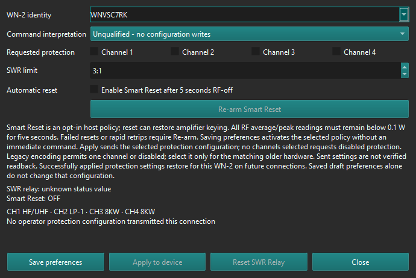

Smart Reset and protection restoration
On this page
What Smart Reset does
Smart Reset can request a relay reset after a reported SWR trip when the WN-2 has shown RF off for five continuous seconds. It is optional and OFF by default. RayWn2App must remain running and receiving valid readings.
Enable it
Open Device → SWR Protection, select the correct WN-2, and check Enable Smart Reset after 5 seconds RF-off. Save the preference. Apply the intended protection settings to the device if they have not already been applied.

Automatic reset is a separate choice from the SWR channel and limit. Select image to enlarge.

Why it may be waiting
All four channels' forward/reflected average and peak readings must remain below 0.1 W. Turning off RF on only the tripped channel is not enough if another channel is still reporting power. The warning identifies channels preventing the countdown. Stale, invalid or disconnected readings cannot establish RF off. A new RF reading restarts the waiting period. Another WN-2's readings do not determine this device's reset.
After the reset request
The application waits for fresh not-tripped information before showing confirmation. It does not assume a successful send means the relay reset. A failed reset or rapid repeat trips can require Re-arm Smart Reset; investigate the cause first. The software cannot guarantee the physical relay contacts or correct an antenna problem. Automatic reset may restore amplifier keying, so choose it only when appropriate for the connected station.
Help home · RF StateSide · RayWn2App operator guide